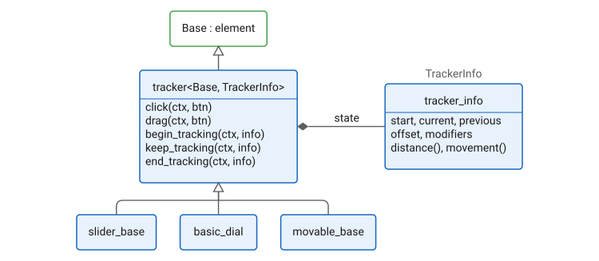
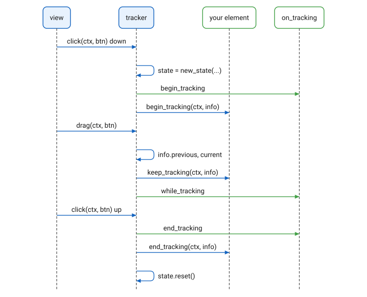

Trackers
Overview
A drag is one gesture: a press, some movement, a release. The element
protocol delivers it as separate calls, click with the button down,
drag for each movement, click with the button up, and an element
that wants the gesture has to keep state across them. tracker does
that once. It is a mix-in: tracker<Base, TrackerInfo> derives from any
element Base, implements click and drag, and calls three hooks a
derived class overrides, begin_tracking, keep_tracking and
end_tracking, each with a tracker_info that holds the gesture’s
state: where it started, where it is, where it was a moment ago, the
modifiers held. The sliders, dials, thumbwheels, the curve editor, the
movable child window and the drag sources are all trackers.

The gesture runs as follows:

-
The press makes the state, with
startat the pointer, reportsbegin_trackingto the view’son_tracking, and callsbegin_tracking. The hook may setinfo.processedtofalseto decline the press; the state is dropped,end_trackingis reported to the view,clickreturnsfalse, and the enclosing composite sends the drags elsewhere.end_trackingthe hook is not called. -
Each movement updates
previousandcurrent, callskeep_tracking, and reportswhile_tracking.movement()is the step since the last call,distance()the whole way from the start. -
The release reports
end_tracking, callsend_tracking, and drops the state.escape_trackingdoes the same from code, for a gesture cancelled by a key.
offset is for grabbing a thing off its centre: a hook sets it in
begin_tracking to the vector from the thing’s reference point to the
pointer, and every current after is shifted back by it, so the gesture
reads as if it had begun on the reference point. The slider sets it to
the pointer’s offset from the thumb’s centre, so the thumb does not jump
under the pointer on the first movement.
TrackerInfo is the state’s type, tracker_info by default. A derived
class that needs more state in the gesture, as the movable child window
does to keep its title bar on screen, derives from tracker_info and
names its type here.
The gesture is also what the view’s on_tracking reports, so a plugin
host, an undo stack or a model binding sees begin_tracking,
while_tracking and end_tracking from every tracker without the
element doing anything more. See Receivers.
Declaration
namespace cycfi::elements
{
struct tracker_info
{
explicit tracker_info(point start_, int modifiers_ = 0);
point distance() const; // from start
point movement() const; // from previous
point start;
point current = start;
point previous = start;
point offset = point{0, 0};
int modifiers = 0;
bool processed = true;
};
template <concepts::Element Base = element, typename TrackerInfo = tracker_info>
class tracker : public Base
{
public:
using tracker_info = TrackerInfo;
bool wants_control() const override;
bool click(context const& ctx, mouse_button btn) override;
void drag(context const& ctx, mouse_button btn) override;
tracker_info* get_state();
tracker_info const* get_state() const;
bool is_tracking() const;
void escape_tracking(context const& ctx);
protected:
virtual void begin_tracking(context const& ctx, tracker_info& info);
virtual void keep_tracking(context const& ctx, tracker_info& info);
virtual void end_tracking(context const& ctx, tracker_info& info);
void track_scroll(context const& ctx, point dir, point p);
};
}A tracker wants control, so it receives the mouse. click and drag
call `Base’s first, so a tracker over a proxy still forwards to its
subject.
Expressions
Notation
t-
A
tracker<Base, TrackerInfo>, or a class derived from it. info-
A
tracker_info&, the state of the gesture in progress. ctx-
A context for
t.
Semantics
| Expression | Semantics |
|---|---|
|
Whether a gesture is in progress. |
|
The gesture’s |
|
End the gesture now, as a release would: |
|
Called on the press, with |
|
Called on each movement, with |
|
Called on the release, or from |
|
Report a scroll wheel step as a |
|
|
|
|
Example
A box the user drags around. It keeps the box’s rectangle, takes hold only when the press lands on it, and moves it by each step of the gesture:
struct draggable_box : tracker<>
{
view_limits limits(basic_context const&) const override
{
return {{full_extent, full_extent}, {full_extent, full_extent}};
}
void draw(context const& ctx) override
{
ctx.canvas.fill_style(colors::gold);
ctx.canvas.add_rect(box.move(ctx.bounds.left, ctx.bounds.top));
ctx.canvas.fill();
}
void begin_tracking(context const& ctx, tracker_info& info) override
{
// Take hold only on the box; otherwise this is not our drag.
info.processed = box.move(ctx.bounds.left, ctx.bounds.top)
.includes(info.current);
}
void keep_tracking(context const& ctx, tracker_info& info) override
{
auto m = info.movement();
box = box.move(m.x, m.y);
ctx.view.refresh(ctx);
}
rect box = {10, 10, 50, 50};
};Copyright (c) 2014-2026 Joel de Guzman. All rights reserved. Distributed under the MIT License